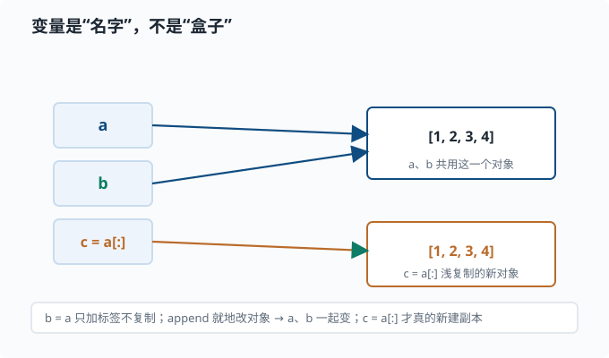

Python 基础：语法、类型、函数
目标：快速但扎实地回顾 Python，不假设你零基础。读完这一页，你能读懂并写出一段干净、类型正确、可复现的 Python 代码，理解变量、容器、控制流、函数与作用域，并知道如何在 agent 工程里把它用对地方。
为什么先学 Python
先把它当成一门普通的编程语言来认识，而不是先贴"人工智能专用"的标签。Python 的特点是读起来特别像大白话：它不靠花括号和分号堆砌语法，而是用缩进和接近英语的单词，把"做一件事"的过程写得几乎可以自然朗读。这让初学者能更快地把精力放在"想清楚要做什么"，而不是"伺候编译器的脾气"。
一个关键心态：
Python 的哲学是"可读性优先"。它不逼你写得很短，而是逼你写得能被人读懂。你要学的不是炫技，而是写出别人（包括三个月后的自己）能看懂的代码。
至于它为什么"值得学"：因为语言的价值很大程度看生态——谁能方便地办成很多事。Python 在数据处理和科学计算上积累了几十年非常成熟的库（后面会逐个用到），这也是它常被选来写分析、实验脚本的原因。你不必一上来就关心某个具体行业，先掌握"用 Python 把事情写清楚"这个通用本事，将来无论做什么实验、查什么数据，都能上手。
变量与对象模型
变量是"名字"，不是"盒子"
这是 Python 新手最容易踩的第一个坑。在 C/C++ 里，变量像一个装值的盒子；在 Python 里，变量只是一个指向对象的标签。
a = [1, 2, 3]
b = a # b 和 a 指向同一个列表对象，不是复制！
b.append(4)
print(a) # [1, 2, 3, 4] ← a 也被改了
要真的复制，得显式调用：
c = a[:] # 浅复制一份列表
d = list(a) # 同样浅复制
把"名字 vs 对象"画出来，区别一目了然：

上面这张图的意思是：b = a 根本没有复制列表，它只是在"名字"这一列新增了一个标签 b，指向和 a 完全相同的那个对象。之后无论是 a 还是 b，改的其实是同一个 [1, 2, 3, 4]。只有当你想真正独立一份时才用 a[:] 或 list(a)，那会创建一个新的列表对象。这个直觉在后面看 NumPy 的视图、PyTorch 的 tensor 引用时全都一样：赋值和切片的默认行为是"共享底层"，不想要共享就显式复制。
理解"名字 vs 对象"这件事，是避免一大批诡异 bug 的钥匙。它和后面 NumPy 的视图、PyTorch 的 tensor 引用都有关系。
顺着"名字 vs 对象"还有一个必学的操作符区分：== 和 is。
a = [1, 2, 3]
b = [1, 2, 3]
a == b # True 值相等（内容一样）
a is b # False 不是同一个对象（两块不同的内存）
c = a
c is a # True 两个名字指向同一个对象
读法：== 问"长得一样吗"，is 问"是同一个吗"。日常比较值用 ==；只有一个地方必须用 is——判断 None：
if acc is None: # 正确
...
if acc == None: # 能跑但不要这样写
...
原因是 == 会调用对象自己的比较方法，理论上可以被自定义类改写出任何行为；而 is 只做"是不是同一个对象"的身份判断，不受任何自定义逻辑影响。None 是全局单例，判它只关心身份，所以约定 is None / is not None。
可变 vs 不可变
对象分两类：
| 类型 | 可变？ | 例子 |
|---|---|---|
| 不可变 | 否 | 整数、浮点、字符串、元组 tuple |
| 可变 | 是 | 列表 list、字典 dict、集合 set |
可变性决定了"修改会不会影响到别的引用"：
flowchart LR
X["对象要不要变<br/>(需要 append / 更新 / 去重)"] --> M["是 - 用可变对象<br/>list / dict / set"]
X --> N["否 - 只读或当键<br/>tuple / str / int + float"]
M --> D["注意：可变对象被共享时，<br/>就地修改会波及所有引用"]
不可变对象"改了"其实是换了个新对象；可变对象可以就地修改。这影响函数传参的直觉：
def f(x):
x = x + 1 # 重新绑定局部名，不影响外面
return x
a = 3
print(f(a), a) # 4 3
def g(lst):
lst.append(1) # 就地修改，影响外面
b = []
g(b)
print(b) # [1]
动态类型与类型标注
Python 变量没有固定类型（这点和 TypeScript 不同），但你仍然应该写类型标注：
from collections.abc import Sequence
def mean(xs: Sequence[float]) -> float:
"""返回均值。"""
return sum(xs) / len(xs) if xs else 0.0
xs: Sequence[float] -> float 这样的标注不改变运行行为（Python 不强制），但它让你的代码变成可读的文档，也让 IDE（编程编辑器的智能提示）和 mypy、pyright（两个最常用的"静态类型检查器"——不运行代码、只读代码就能报告类型不匹配的工具）能帮你提前抓错误。后面读 TypeScript 仓库时你会发现，静态类型检查的作用非常大。
顺带一个约定：类型标注从 collections.abc 导入（Sequence、Iterable、Mapping）。老代码里的 from typing import Sequence 还能工作，但官方已把它标记为弃用路线——新代码统一走 collections.abc。
常用内置容器
| 容器 | 特点 | 例子 |
|---|---|---|
列表 list |
有序、可变、可以重复 | [1, 2, 3] |
元组 tuple |
有序、不可变、可以重复 | (1, 2, 3) |
字典 dict |
键值对、键必须可哈希 | {"a": 1} |
集合 set |
无序、无重复 | {1, 2, 3} |
选容器的第一原则：需求决定结构。要按顺序访问 → 列表；要快速按键查找 → 字典；要去重 → 集合；要当函数返回多个值 → 元组。选择对了，代码自然简洁。
控制流
Python 用缩进表示代码块，没有花括号。条件、循环都靠 : 加缩进：
scores = [70, 90, 55, 82]
passed = []
for s in scores:
if s >= 60:
passed.append(s)
else:
print("不及格:", s)
几个写得很地道的惯用法：
# 带索引的循环：enumerate
for i, s in enumerate(scores):
pass
# 同时遍历两个列表：zip
names = ["a", "b"]
for name, s in zip(names, scores):
pass
# 列表推导式：简洁且通常更快
passed = [s for s in scores if s >= 60]
回看上面那段手写循环：先建一个空列表 passed，再 for 遍历、if 判断、append 进去。这三步其实是一个很固定的"套路"——从一堆东西里挑出符合条件的，变成一个新列表。Python 给这种套路准备了一个更直接的写法，把"要什么"和"怎么过滤"浓缩成一行，就是列表推导式。读法也像说话：[s for s in scores if s >= 60] 就是"对 scores 里的每个 s，如果 s >= 60 就放进新列表"。
语法骨架是 [表达式 for 项 in 序列 if 条件]，其中 if 条件 可以省略。它把"取、过滤、变换"压进一行，而且通常更快；但要克制：推导式嵌套过深会牺牲可读性，两层以上就该考虑换回清晰的循环。
函数与作用域
函数是 Python 组织逻辑的最小单位。要点：
def 名字(参数) -> 返回类型:定义函数。- 参数可以有默认值，但默认值只求值一次，别用可变对象当默认值。
- 函数内对变量的查找规则：局部 → 外层函数 → 全局 → 内置（四个词的首字母 L-E-G-B，合称 LEGB 规则——函数里用一个名字时，Python 按这个由近及远的顺序找它定义在哪）。
经典的默认参数陷阱：
def add(x, acc=[]): # 危险！acc 只创建一次
acc.append(x)
return acc
print(add(1)) # [1]
print(add(2)) # [1, 2] ← 居然记录了上一次！
正确做法是 acc=None，在函数体里再初始化：
def add(x, acc=None):
acc = [] if acc is None else acc
acc.append(x)
return acc
异常处理
猜一个值会不会出错不如直接尝试并捕获——这正是 Python 的"请求原谅优于请求许可"（EAFP）风格：
def safe_div(a: float, b: float) -> float | None:
try:
return a / b
except ZeroDivisionError:
return None
要点：
try/except捕获异常；else在没有异常时执行；finally无论如何都执行（常用于关闭资源）。- 捕获具体异常类型，别用裸
except:吞掉所有错误——那会掩盖 bug。 raise主动抛出异常，用于"这个状态不应该发生"。
模块与导入
把代码拆成多个文件，用 import 组织：
# 文件 mymath.py
def square(x):
return x * x
# 另一个文件
import mymath
mymath.square(3) # 9
from mymath import square
square(3) # 9
import 模块 引入的是模块名字；from 模块 import 名字 直接引入某个名字。推荐 import 模块 再用 模块.名字 调用，因为命名空间清晰、不易冲突。
动手：一段研究脚本
把前面的点串起来，写一个能反复运行的研究脚本：
from __future__ import annotations
from typing import Sequence
def stats(xs: Sequence[float]) -> dict[str, float]:
"""返回均值、最小、最大、个数。"""
n = len(xs)
if n == 0:
return {"n": 0.0}
return {
"n": float(n),
"mean": sum(xs) / n,
"min": min(xs),
"max": max(xs),
}
if __name__ == "__main__":
data = [1.0, 2.0, 3.0, 4.0, 5.0]
print(stats(data))
末尾的 if __name__ == "__main__": 保证"直接运行这个文件"才执行主逻辑，作为模块被导入时不执行——这是研究脚本的标准写法。
思考题
a = [1,2,3]; b = a; b.append(4)之后a是什么？为什么？- 为什么 Python 函数不要用可变对象当默认参数？
import 模块和from 模块 import 名字有什么差别，各适合什么场景？- 下列代码输出什么，为什么？
x = 10
def f():
x = 20
f()
print(x)
参考答案
a是[1, 2, 3, 4]。因为b = a只是让b指向a所指的同一个列表对象，append是就地修改对象，所以通过b的修改会反映在a上。- 因为默认值在函数定义时只求值一次，并在多次调用间被共享。如果默认值是可变对象（如列表），第一次调用就地修改后，第二次调用看到的是"脏"的旧状态。用
None哨兵并在函数体内初始化可避免。 import 模块引入模块本身，用模块.名字访问，命名空间清晰、不易冲突，适合广泛使用某个模块。from 模块 import 名字直接引入具体名字，代码更短，但当名字与本地冲突或来自不同模块同名时会遮蔽，适合只用到少数名字时。- 输出
10。函数内部x = 20创建的是局部变量x，不会改到全局的x。函数返回后全局x仍是10。除非在函数里显式声明global x，否则赋值总是绑定为局部名。
下一步
- 想让矩阵运算又快又直观 → 02-02 NumPy。
- 想理解"选对数据结构"对性能的影响 → 02-03 数据结构。
- 想用 Python 做完整的研究工作流 → 02-07 用 Python 做研究。
- 想温习数学侧 → 01-01 线性代数。